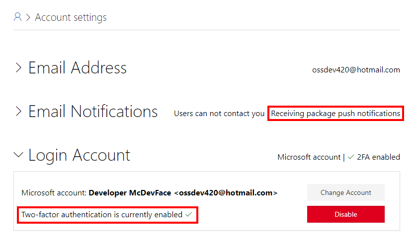

Publishing a NuGet Package
NuGet packages are published and consumed from package repositories. While NuGet.org is the most widely known and used repository, there are many places to publish NuGet packages:
NuGet.org is the primary online repository for NuGet packages. All packages on NuGet.org are publicly available to everyone. By default, Visual Studio has NuGet.org as a package source and for many developers this is the only package repository they will interact with. NuGet.org is the best place to publish stable packages and pre-release packages that you want community feedback on.
MyGet repository service supports free custom package feeds for open source projects. A MyGet public custom feed is an ideal place to publish pre-release packages created by your CI service. MyGet also provides private feeds commercially.
A local feed allows you to treat a folder like a package repository and makes the
*.nupkgfiles in the folder accessible by NuGet. A local feed is useful for testing a NuGet package prior to publishing it to NuGet.org.
Note
Nuget.org does not allow a package to be deleted once it is uploaded. A package can be unlisted so that it is not publicly visible in the UI but the *.nupkg can still be downloaded on restore. Also, nuget.org does not allow duplicate package versions. To correct a NuGet package with an error you have to unlist the incorrect package, increment the version number and publish a new version of the package.
✔️ DO publish stable packages and pre-release packages you want community feedback on to NuGet.org.
✔️ CONSIDER publishing pre-release packages to a MyGet feed from a continuous integration build.
✔️ CONSIDER testing packages in your development environment using a local feed or MyGet before publishing to NuGet.org.
More Information
- Publish a package to NuGet.org
- Deleting packages on NuGet.org
- MyGet open source offer
- NuGet local feeds
- Configure NuGet package sources
NuGet.org Security
It is important that bad actors cannot access your NuGet account and upload a malicious version of your library. NuGet.org offers two-factor authentication and email notifications when a package is published. Enable these features after logging into NuGet.org on the Account settings page.

✔️ DO use a Microsoft account to login to NuGet.
✔️ DO enable two factor authentication for accessing NuGet.
✔️ DO enable email notification when a package is published.